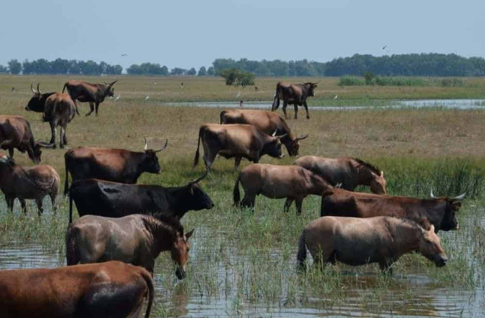
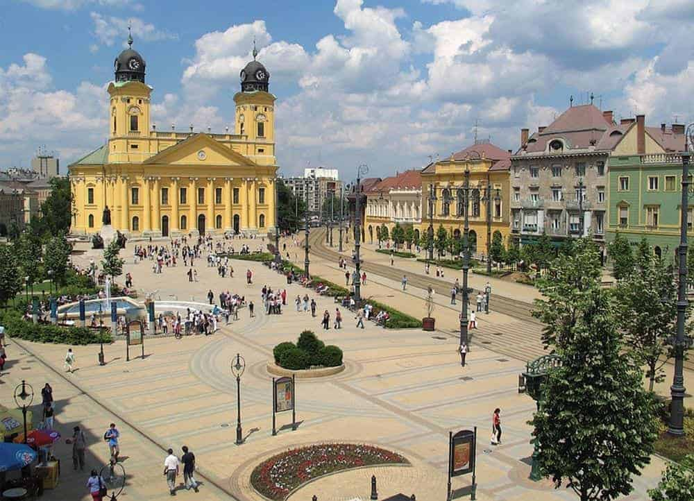
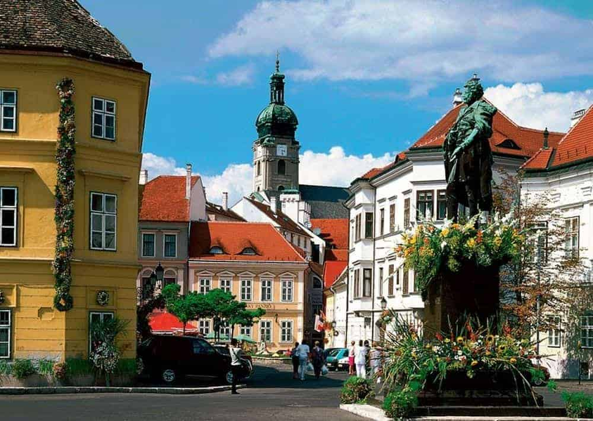
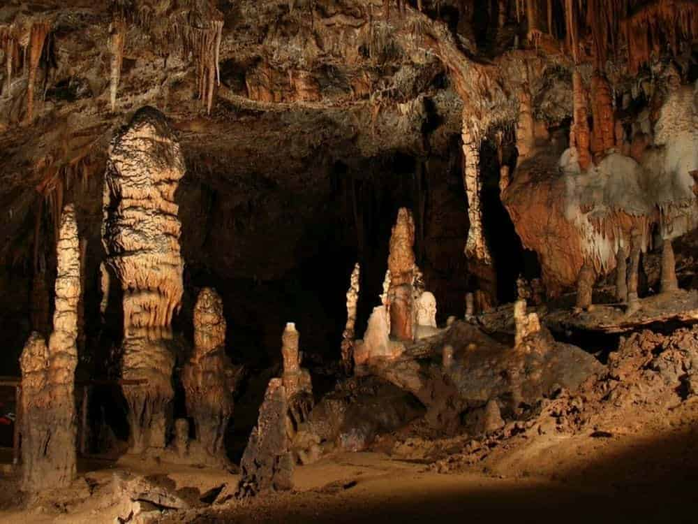

Parcul Național HortobagyHortobagy este primul parc național al Ungariei, ca ordine cronologică, el datând din anul 1973. Este cea mai mare zonă protejată a țării și cea mai mare suprafață de teren cu iarbă semi-naturală din Europa, o stepă alcalină care datează de acum 10.000 de ani. Aici animalele (printre care caii sălbatici) trăiesc încă din Epoca de Gheață. Cailor li se adaugă taurul și bivolul de apă. E un loc perfect pentru cei pasionați de observarea de păsări, în rezervație trăind 342 de specii.
|
 |
|  |
DebrecenOrașul Debrecen a servit drept capitală a Ungariei în câteva rânduri, devenind odată cu trecerea secolelor un important centru cultural. În bună măsură distrus de bombardamentele din timpul celui de-al doilea Război Mondial, Debrecen este considerat astăzi centrul intelectual al țării, acest renume luând amploare încă din 1538, odată cu fondarea Colegiului Calvinist, care în zilele noastre poartă denumirea de Universitatea Debrecen și care a devenit celebru pentru arhitectura lui. |
GyorAvând rădăcini bine înfipte în perioadele celtă și romană, orașul Gyor s-a aflat de-a lungul istoriei sub comanda mongolilor, a maghiarilor, a cehilor și a otomanilor, cea mai mare bătălie purtată de locuitorii lui ducându-se împotriva celor din urmă. Gyor se află între Budapesta și Viena și e un oraș foarte potrivit pentru o vizită, fie ea și ca oprire de o noapte. La aproape fiecare pas poți da peste clădiri vechi și statui frumoase. |
 |
|  |
Parcul Național AggtelekÎn caz că ești pasionat de speologie, ar trebui să pui Parcul Aggtelek pe lista ta. Acesta se află în nordul Ungariei, la circa trei ore de condus din Budapesta și adăpostește peștera cu cel mai mare nmăr de stalactite din Europa. O experiență unică este participarea la unul dintre concertele care se țin în interior la Baradla. Parcul este o zonă protejată, îm unele porțiuni accesul turiștilor e restricționat dar există suficient de multe trasee care se pot urma și de-a lungul cărora poți observa flora și fauna din acest frumos parc național, laolaltă cu vizitarea câtorva sate care se află chiar pe teritoriul lui. |
Poate te intereseaza urmatoarele țări: